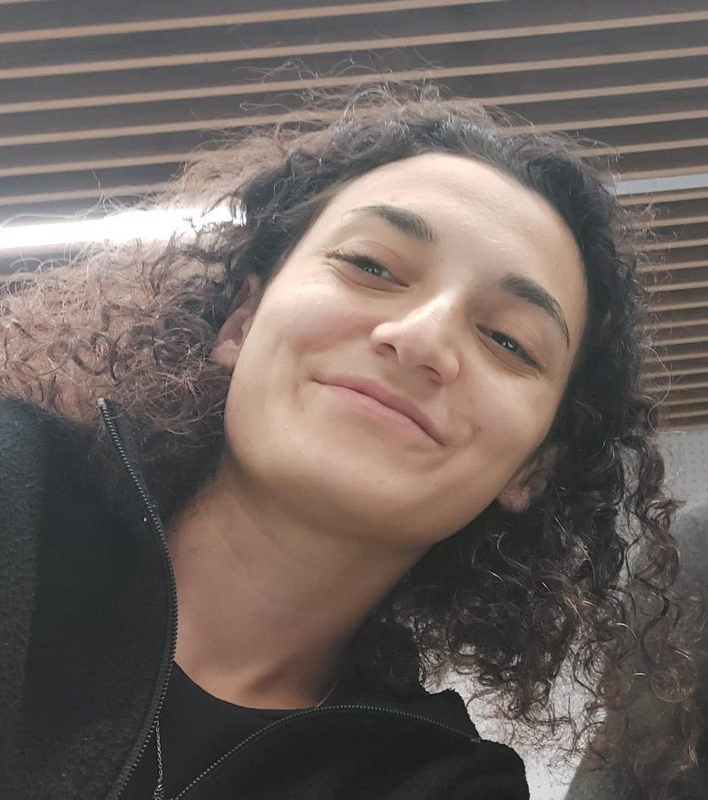

I am a recent Electrical & Electronics Engineering graduate from Abdullah Gül University, Samsun, Turkey, with a GPA of 3.13 / 4.00. My work spans embedded systems, PCB design, and AI-based image processing, with a focus on building robust hardware-software solutions for real-world problems.
As an embedded systems engineer, I have built and deployed firmware on STM32 and ESP32 platforms across three internship rotations at Masswell. I implemented battery data logging over UART with SD card and RTC integration, developed remote monitoring infrastructure via MQTT over TCP, and designed a desktop application for real-time data access — eliminating the need for physical SD card removal in field maintenance.
As a PCB designer, I led the full design cycle of an STM32-based smart security system at Masswell — from schematic capture through Gerber file production, board assembly, soldering, and hardware validation. I work in Altium Designer and have hands-on experience with communication protocols including UART, MQTT, GSM/SIM800L, I2C, and SPI.
Research & Projects: I am an active contributor to a TÜBİTAK 2209-A funded project developing AI-powered smart glasses for visually impaired users, combining YOLO-based real-time object detection with directional 3D audio feedback on Raspberry Pi. My deep learning work includes breast cancer histopathological image classification using InceptionResNetV2 and VGG16, achieving 90% accuracy.
Background: I am fluent in Turkish (native) and English (advanced). I am passionate about engineering that serves people — from accessibility technology for the visually impaired to intelligent hardware systems.
selected experience view all →
- Led PCB design for an STM32-based smart security system, from schematic design through manufacturing files.
- Prepared PCB routing and production (Gerber) files for fabrication, then performed board assembly, soldering, and hardware validation testing.
- Built a system that collects battery data over UART via ESP32 and logs it to an SD card with RTC integration.
- Designed a desktop application enabling real-time monitoring and file download without physically removing the SD card, reducing field maintenance time.
- Implemented hardware-software integration for battery management system communication via the SIM800L module.
- Built remote monitoring infrastructure using MQTT over TCP for real-time data transmission.
selected projects view all →
TÜBİTAK 2209-A funded smart glasses for visually impaired users with real-time YOLO-based object detection and directional 3D audio feedback on Raspberry Pi.
Classified histopathological breast cancer images using InceptionResNetV2 and VGG16, benchmarked against traditional ML methods. Achieved 90% classification accuracy through optimized preprocessing and segmentation.